BAXI
Assistência a caldeiras Baxi: avaliação de avarias, reparação e manutenção.
Conhecer o serviço →
Assistência técnica multimarca.

Assistência a caldeiras Baxi: avaliação de avarias, reparação e manutenção.
Conhecer o serviço →Assistência a caldeiras Roca: avaliação de avarias, reparação e manutenção.
Conhecer o serviço →Assistência a caldeiras Chaffoteaux: avaliação de avarias, reparação e manutenção.
Conhecer o serviço →Assistência a caldeiras Ferroli: avaliação de avarias, reparação e manutenção.
Conhecer o serviço →Assistência a caldeiras Immergas: avaliação de avarias, reparação e manutenção.
Conhecer o serviço →Assistência a caldeiras Vaillant: avaliação de avarias, reparação e manutenção.
Conhecer o serviço →Assistência a caldeiras Vulcano: avaliação de avarias, reparação e manutenção.
Conhecer o serviço →As marcas e os logótipos pertencem aos respetivos titulares. A referência às marcas não implica assistência oficial ou autorizada.